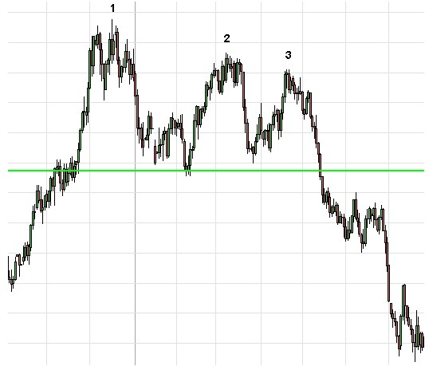
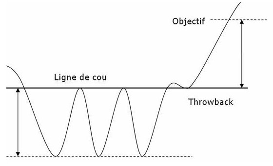

- Figures chartistes : Triple Top / Bottom -
Le triple top / bottom est une figure où trois sommets / creux vont se succéder, témoignant d’une importante résistance / support. Cela marque une volonté de retournement.
Pour le triple top ci après, la zone de résistance va entraîner une correction par 3 fois. La ligne de cou de la figure sera formée par le plus bas des deux pics baissiers. Une première correction va donc intervenir puis, par la suite, le cours va revenir taper la résistance. L’amplitude des deux sommets est normalement la même (comme dans le cas ci-dessous), mais il peut arriver que le premier sommet soit plus haut que les deux suivants. Cette configuration vient renforcer la validité de la figure puisqu’elle traduit d’un essoufflement du courant acheteur.
Attention, si le deuxième sommet est plus bas que les deux autres, il peut s’agir d’une figure en tête et épaules.
Une deuxième correction va ensuite intervenir, théoriquement sur le même niveau que la première correction. Si la ligne de cou est cassée à ce moment précis, alors il peut s’agir d’un double top. C’est la toute la difficulté. Dans certains cas, on ne sait qu’après coup à quel type de figure on est confronté. Un retour sur la résistance doit se faire. Toutefois, le 3ème sommet peut être moins haut que les deux premiers ce qui vient renforcer les chances de retournements (essoufflement du courant acheteur). C’est la 3ème correction qui va entraîner la cassure de la ligne de cou et valider le retournement baissier.
Une fois la ligne de cou cassée, il peut arriver que le cours vienne rebondir dessus (cette ligne devient alors résistance, on parle alors d’un pullback), pour ensuite repartir à la baissie. L’objectif de cours est déterminé par l’écart entre la résistance et la ligne de cou que l'on reporte sur la ligne de cou de manière symétrique.
Triple Top

Triple Bottom

80% il y a retournement baissier.
85% il y a sortie baissière.
50% l’objectif de la figure est atteint si la ligne de cou est cassée.
85% il y a une poursuite du mouvement baissier à la cassure de la ligne de cou.
84% un pullback intervient sur la ligne de cou.
66% il y a sortie haussière.
73% l’objectif de la figure est atteint si la ligne de cou est cassée.
96% il y a une poursuite du mouvement haussier à la cassure de la ligne de cou.
70% un pullback intervient sur la ligne de cou.
- En cas de pullback, le mouvement sera moins important.
- Si la résistance est longuement testé avant une correctio, alors le mouvement suivant la cassure de la ligne de cou sera plus importante.
- Plus les trois sommets sont proches, plus le % de réussite de la figure est important.
- Plus les mouvements entre la ligne de cou et la résistance sont directs, plus la figure est performante.
- Plus le mouvement ayant précédé la formation du triple top / bottom est important, plus le mouvement à la cassure de la ligne de cou sera puissant.
- La figure est plus performante si le troisième sommet / creux est moins profond / haut que les deux premiers.